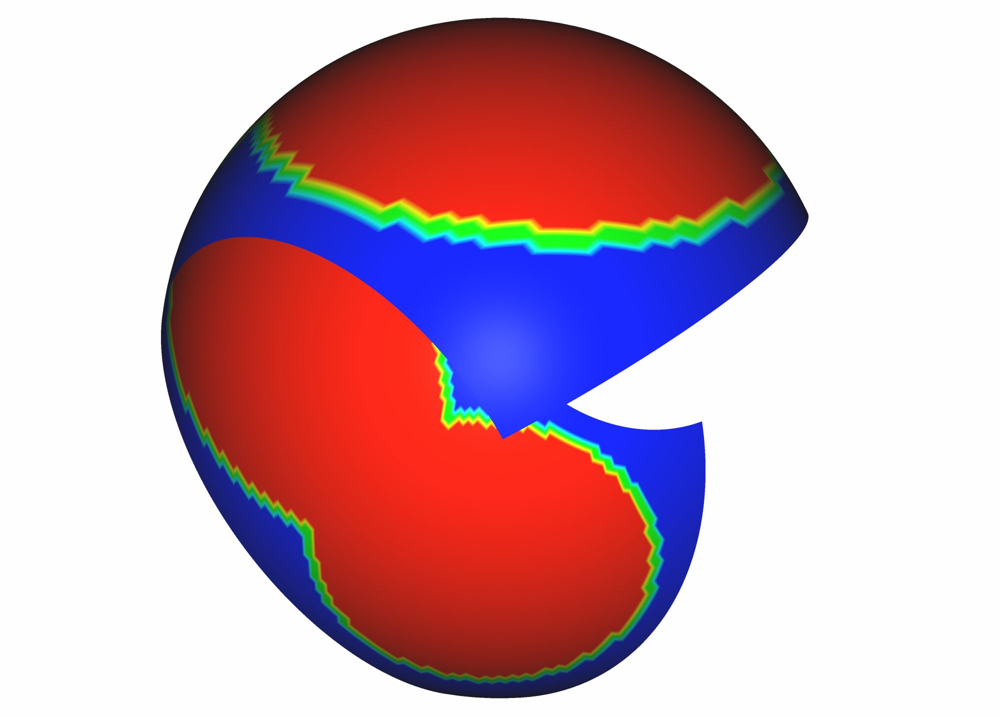
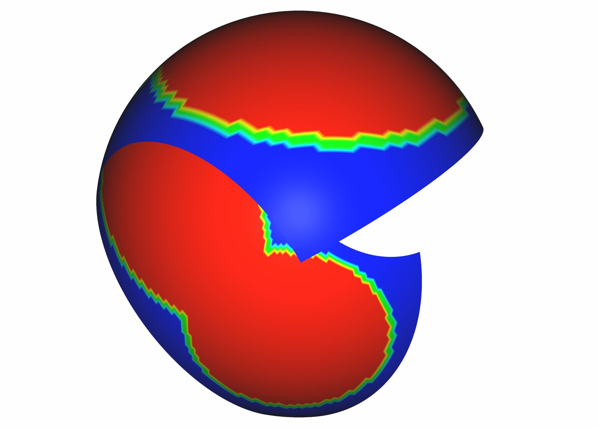

Intersector: Mesh-Intersection-Based Services
Preamble
This module provides pre and post processing services relying on mesh-intersection computations on arbitrary polyhedral meshes.
It also gives auxiliary functions that transform topologically and geometrically polyhedral meshes which are useful in the process of mesh generation by intersection.
A mesh can be stored as an array (as defined in the Converter documentation) or in a zone node of a CGNS/python tree (pyTree).
This module is part of Cassiopee, a free open-source pre- and post-processor for CFD simulations.
For use with the array interface, you have to import Intersector module:
import Intersector as XOR
For use with the pyTree interface:
import Intersector.PyTree as XOR
List of functions
– Main Functions
Conformizes a1 (optionally with a2). |
|
Computes the union between two closed-surface or two volume meshes. |
|
Computes the intersection between two closed-surface or two volume meshes. |
|
Computes the difference between two closed-surface or two volume meshes. |
|
Computes the difference between a volume mesh and a surface mesh. |
|
Computes the intersection trace (a polyline) between two input closed surfaces. |
|
Computes the weight coefficients of visibility for overset grid configurations as a field called xcelln, for both surface and volume mesh of any kind. |
|
Adapts an unstructured mesh a with repsect to a sensor. |
– Collision predicates
Returns the list of polygons in a1 and a2 that are overlapping. |
|
Returns the list of cells in a1 and a2 that are colliding. |
|
Checks self-intersections in a mesh. |
– Transformation Functions
Triangulates specified polygons of a volume mesh. |
|
Triangulates exterior polygons of a volume mesh. |
|
Reorients outward the external polygons of a mesh. |
|
Convexifies any non-convex polygon in a mesh. |
|
Force periodicity for faces that are supposed to be periodic. |
|
Splits some prescribed polygons following a prescribed splitting policy. |
|
Splits some non-centroid-star_shaped cells. |
|
Agglomerates prescribed cells. |
|
Agglomerates non-centroid-star-shaped cells. |
|
Agglomerates cells to make disappear specified polygons. |
|
Simplifies over-defined polyhedral cells (agglomerate some elligible polygons). |
|
Closes any polyhedral cell in a mesh (processes hanging nodes on edges). |
– Adaptation Specific Functions
Adapts a bounding box to a cloud of interior points |
|
Returns a hierarchical zone hook. |
|
Releases a hierachical zone hook. |
|
Converts the basic element leaves of a hierarchical mesh to a conformal polyhedral mesh. |
|
– Metric Functions
Computes cells volumes in a. |
|
Computes cells centroids in a. |
|
Returns a field of growth ratio. |
– Extraction Functions
Extracts all cells that will probably cause trouble to a CFD solver. |
|
Extracts prescribed outer cell layers. |
|
Returns the cells in t1 having specified faces or cell ids. |
– Check Functions
Returns the difference between 2 meshes as 2 zones. |
|
Returns the first cell id that is open. |
|
Returns the cell id for which the Gauss flux is the greatest. |
|
Computes the minimum volume using the input orientation (ParentElement). |
|
Checks if there are any cell with less than 4 faces. |
– Conversion Functions
Converts a Cassiopee NGON Format for polygons (Face/Edge) to a Face/Node Format. |
Contents
Main Functions
- Intersector.conformUnstr(a1, a2=None, tol=0., left_or_right=0, itermax=10)
Makes conformal a TRI or a BAR soup (i.e. a set of elements not necessarily connected as a mesh) by detecting and solving all the collisions between elements.
Colliding elements are cut to get a conformal set. Mixing types BAR and TRI is not currently handled.
- Parameters:
a1 ([array, list of arrays] or [pyTree, base, zone, list of zones]) – First input mesh (BAR or TRI).
a2 ([array, list of arrays] or [pyTree, base, zone, list of zones]) – Second input mesh (BAR or TRI). If s2 is ‘None’ self-intersections are solved over s1.
tol (float) – Merging tolerance when points (existing or computed by intersections) are too close.
left_or_right (0, 1 or 2) – Tells the function what to ouput : the transformed s1 (0), s2(1) or both (2).
itermax (int) – Number of intersection/merging iterations. 10 is the default value.
Tips and Notes:
Set itermax to 1. to improve speed and the Delaunay kernel robustness. The result might have poorer quality triangles though.
Tolerance :
if tol > 0. : the value is used as an absolute overall tolerance
if tol = 0. : a value is computed as being 5% of the smallest edge length.
if tol < 0. : MIN(5%, -tol) is used as a ratio to apply to the smallest edge length to get the tolerance.
Example of use:
# - conformUnstr (array) - # Conforming 1 or 2 TRI/BAR together (same type for both operands import Generator as G import Intersector as XOR import Converter as C import Geom as D from Geom.Parametrics import base import Transform as T s1 = D.sphere((0,0,0), 1, N=20) s2 = D.surface(base['plane'], N=30) s2 = T.translate(s2, (0.2,0.2,0.2)) s1 = C.convertArray2Tetra(s1); s1 = G.close(s1) s2 = C.convertArray2Tetra(s2); s2 = G.close(s2) x = XOR.conformUnstr(s1, s2, 0., 2) C.convertArrays2File([x], 'out.plt') c1 = D.circle((0,0,0), 1, N=100) c2 = D.circle((0.2,0,0), 1, N=50) c1 = C.convertArray2Tetra(c1); c1 = G.close(c1) c2 = C.convertArray2Tetra(c2); c2 = G.close(c2) x = XOR.conformUnstr(c1, c2, tol=0.) C.convertArrays2File([x], 'out1.plt')
# - conformUnstr (pyTree) - # Conforming 1 or 2 TRI/BAR together (same type for both operands) import Generator.PyTree as G import Intersector.PyTree as XOR import Converter.PyTree as C import Geom.PyTree as D from Geom.Parametrics import base import Transform.PyTree as T s1 = D.sphere((0,0,0), 1, N=20) s2 = D.surface(base['plane'], N=30) s2 = T.translate(s2, (0.2,0.2,0.2)) s1 = C.convertArray2Tetra(s1); s1 = G.close(s1) s2 = C.convertArray2Tetra(s2); s2 = G.close(s2) x = XOR.conformUnstr(s1, s2, tol=0.) C.convertPyTree2File(x, 'out.plt') c1 = D.circle((0,0,0), 1, N=100) c2 = D.circle((0.2,0,0), 1, N=50) c1 = C.convertArray2Tetra(c1); c1 = G.close(c1) c2 = C.convertArray2Tetra(c2); c2 = G.close(c2) x = XOR.conformUnstr(c1, c2, tol=0.) C.convertPyTree2File(x, 'out1.plt')
- Intersector.booleanUnion(a1, a2, tol=0., preserve_right=1, solid_right=1, agg_mode=1, extrude_pgs=[], multi_zone=False)
Creates a conformal union between two components, either TRI surfaces or Polyhedral volumes.
- Parameters:
a1 ([array, list of arrays] or [pyTree, base, zone, list of zones]) – First mesh operand.
a2 ([array, list of arrays] or [pyTree, base, zone, list of zones]) – Second mesh operand.
tol (float) – Merging tolerance when points (existing or computed by intersections) are too close.
preserve_right (0 or 1) – Indicates the merging direction, either a1->a2 or a2->a1. If set to 1(0), it means a1->a2 (a2->a1), i.e. a2(a1)’s points are preserved.
solid_right (0 or 1) – Indicates that the second operand is not penetrable, i.e. it is prioritized over the first operand a1.
agg_mode (0,1 or 2.) – Option for agglomerating cut polygons: 0 to keep them as split triangles, 1 to get convex agglomerations and 2 to get a full agglomeration.
extrude_pgs (list of int) – Optional list of polygons to extrude.
multi_zone (True or False) – If set to True, preserve input zoning of a1 and a2 upon exit.
Prerequisites :
External polygons must be oriented consistently and outwardly (use Transform.reorderAll before)
Tips and Notes:
For assembling meshes, set solid_right to 1 and pass the prioritized mesh as second operand.
extrude_pgs: required whenever a1 and a2 are in contact and a2 is prioritized: avoids to compute useless intersections by telling what are the indices of contact polygons in a2.
Example of use:
# - booleanUnion (array) - import Intersector as XOR import Generator as G import Converter as C import Geom as D s1 = D.sphere((0,0,0), 1, N=20) s2 = D.sphere((0.,1.,0.), 1, N=30) s1 = C.convertArray2Tetra(s1); s1 = G.close(s1) s2 = C.convertArray2Tetra(s2); s2 = G.close(s2) x = XOR.booleanUnion(s1, s2, tol=0.) C.convertArrays2File([x], 'out.plt')
# - boolean union (PyTree) - import Intersector.PyTree as XOR import Converter.PyTree as C M1 = C.convertFile2PyTree('boolNG_M1.tp') M1 = C.convertArray2NGon(M1) M2 = C.convertFile2PyTree('boolNG_M2.tp') M2 = C.convertArray2NGon(M2) tol = -0.5e-3 x = XOR.booleanUnion(M1, M2, tol, preserve_right=1, solid_right=1) t = C.newPyTree(['Base',2]); t[2][1][2].append(x) C.convertPyTree2File(t, 'boolNGunion11.cgns') x = XOR.booleanUnion(M1, M2, tol, preserve_right=0, solid_right=1) t = C.newPyTree(['Base',2]); t[2][1][2].append(x) C.convertPyTree2File(t, 'boolNGunion01.cgns') x = XOR.booleanUnion(M1, M2, tol, preserve_right=1, solid_right=0) t = C.newPyTree(['Base',2]); t[2][1][2].append(x) C.convertPyTree2File(t, 'boolNGunion10.cgns') x = XOR.booleanUnion(M1, M2, tol, preserve_right=0, solid_right=0) t = C.newPyTree(['Base',2]); t[2][1][2].append(x) C.convertPyTree2File(t, 'boolNGunion00.cgns')
- Intersector.booleanIntersection(a1, a2, tol=0., preserve_right=1, solid_right=1, agg_mode=1)
Computes a conformal intersection between two components, either TRI surfaces or Polyhedral volumes.
- Parameters:
a1 ([array, list of arrays] or [pyTree, base, zone, list of zones]) – First mesh operand.
a2 ([array, list of arrays] or [pyTree, base, zone, list of zones]) – Second mesh operand.
tol (float) – Merging tolerance when points (existing or computed by intersections) are too close.
preserve_right (0 or 1) – Indicates the merging direction, either a1->a2 or a2->a1. If set to 1(0), it means a1->a2 (a2->a1), i.e. a2(a1)’s points are preserved.
solid_right (0 or 1) – Indicates that the second operand is not penetrable, i.e. it is prioritized over the first operand a1.
agg_mode (0,1 or 2.) – Option for agglomerating cut polygons : 0 to keep them as split triangles, 1 to get convex agglomerations and 2 to get a full agglomeration.
Prerequisites :
External polygons must be oriented consistently and outwardly (use Transform.reorderAll before)
Example of use:
# - boolean intersection (array) - import Intersector as XOR import Generator as G import Converter as C import Geom as D s1 = D.sphere((0,0,0), 1, N=20) s2 = D.sphere((0.,1.,0.), 1, N=30) s1 = C.convertArray2Tetra(s1); s1 = G.close(s1) s2 = C.convertArray2Tetra(s2); s2 = G.close(s2) x = XOR.booleanIntersection(s1, s2, tol=0.) C.convertArrays2File([x], 'out.plt')
# - boolean intersection (PyTree) - import Intersector.PyTree as XOR import Converter.PyTree as C M1 = C.convertFile2PyTree('boolNG_M1.tp') M1 = C.convertArray2NGon(M1) M2 = C.convertFile2PyTree('boolNG_M2.tp') M2 = C.convertArray2NGon(M2) tol = 1.e-12 x = XOR.booleanIntersection(M1, M2, tol, preserve_right=1, solid_right=1) t = C.newPyTree(['Base',2,x]) C.convertPyTree2File(t, 'boolNGinter11.cgns') x = XOR.booleanIntersection(M1, M2, tol, preserve_right=0, solid_right=1) C.convertPyTree2File(x, 'boolNGinter01.cgns') x = XOR.booleanIntersection(M1, M2, tol, preserve_right=1, solid_right=0) C.convertPyTree2File(x, 'boolNGinter10.cgns') x = XOR.booleanIntersection(M1, M2, tol, preserve_right=0, solid_right=0) C.convertPyTree2File(x, 'boolNGinter00.cgns')
- Intersector.booleanMinus(a1, a2, tol=0., preserve_right=1, solid_right=1, agg_mode=1)
Computes a conformal difference between two components, either TRI surfaces or Polyhedral volumes.
- Parameters:
a1 ([array, list of arrays] or [pyTree, base, zone, list of zones]) – First mesh operand.
a2 ([array, list of arrays] or [pyTree, base, zone, list of zones]) – Second mesh operand.
tol (float) – Merging tolerance when points (existing or computed by intersections) are too close.
preserve_right (0 or 1) – Indicates the merging direction, either a1->a2 or a2->a1. If set to 1(0), it means a1->a2 (a2->a1), i.e. a2(a1)’s points are preserved.
solid_right (0 or 1) – Indicates that the second operand is not penetrable, i.e. it is prioritized over the first operand a1.
agg_mode (0,1 or 2.) – Option for agglomerating cut polygons : 0 to keep them as split triangles, 1 to get convex agglomerations and 2 to get a full agglomeration.
Prerequisites :
External polygons must be oriented consistently and outwardly (use Transform.reorderAll before)
Example of use:
# - booleanMinus (array) - import Intersector as XOR import Generator as G import Converter as C import Geom as D s1 = D.sphere((0,0,0), 1, N=20) s2 = D.sphere((0.,1.,0.), 1, N=30) s1 = C.convertArray2Tetra(s1); s1 = G.close(s1) s2 = C.convertArray2Tetra(s2); s2 = G.close(s2) x = XOR.booleanMinus(s1, s2, tol=0.) C.convertArrays2File([x], 'out.plt')
# - boolean minus (PyTree) - import Intersector.PyTree as XOR import Converter.PyTree as C M1 = C.convertFile2PyTree('boolNG_M1.tp') M1 = C.convertArray2NGon(M1) M2 = C.convertFile2PyTree('boolNG_M2.tp') M2 = C.convertArray2NGon(M2) tol = 1.e-12 x = XOR.booleanMinus(M1, M2, tol, preserve_right=1, solid_right=1) t = C.newPyTree(['Base',2]); t[2][1][2].append(x) C.convertPyTree2File(t, 'boolNGminus11.cgns') x = XOR.booleanMinus(M1, M2, tol, preserve_right=0, solid_right=1) t = C.newPyTree(['Base',2]); t[2][1][2].append(x) C.convertPyTree2File(t, 'boolNGminus01.cgns') x = XOR.booleanMinus(M1, M2, tol, preserve_right=1, solid_right=0) t = C.newPyTree(['Base',2]); t[2][1][2].append(x) C.convertPyTree2File(t, 'boolNGminus10.cgns') x = XOR.booleanMinus(M1, M2, tol, preserve_right=0, solid_right=0) t = C.newPyTree(['Base',2]); t[2][1][2].append(x) C.convertPyTree2File(t, 'boolNGminus00.cgns')
- Intersector.intersection(a1, a2, tol=0.)
Returns the ‘BAR’ contour defining the intersection between two TRI-surfaces.
- Parameters:
a1 ([array, list of arrays] or [pyTree, base, zone, list of zones]) – First mesh operand.
a2 ([array, list of arrays] or [pyTree, base, zone, list of zones]) – Second mesh operand.
tol (float) – Merging tolerance when points (existing or computed by intersections) are too close.
Example of use:
# - intersection (array) - import Intersector as XOR import Generator as G import Converter as C import Geom as D s1 = D.sphere((0,0,0), 1, N=20) s2 = D.sphere((0.,1.,0.), 1, N=30) s1 = C.convertArray2Tetra(s1); s1 = G.close(s1) s2 = C.convertArray2Tetra(s2); s2 = G.close(s2) x = XOR.intersection(s1, s2, tol=0.) C.convertArrays2File([x], 'out.plt')
# - intersection (pyTree) - import Intersector.PyTree as XOR import Generator.PyTree as G import Converter.PyTree as C import Geom.PyTree as D s1 = D.sphere((0,0,0), 1, N=20) s2 = D.sphere((0.,1.,0.), 1, N=30) s1 = C.convertArray2Tetra(s1); s1 = G.close(s1) s2 = C.convertArray2Tetra(s2); s2 = G.close(s2) x = XOR.intersection(s1, s2, tol=0.) C.convertPyTree2File(x, 'out.cgns')
- Intersector.diffSurf(a1, a2, tol=0., preserve_right=1, agg_mode=1)
Cut-cell function : Computes a conformal difference between a volume mesh and a surface mesh
- Parameters:
a1 ([array, list of arrays] or [pyTree, base, zone, list of zones]) – First mesh operand.
a2 ([array, list of arrays] or [pyTree, base, zone, list of zones]) – Second mesh operand.
tol (float) – Merging tolerance when points (existing or computed by intersections) are too close.
preserve_right (0 or 1) – Indicates the merging direction, either a1->a2 or a2->a1. If set to 1(0), it means a1->a2 (a2->a1), i.e. a2(a1)’s points are preserved.
solid_right (0 or 1) – Indicates that the second operand is not penetrable, i.e. it is prioritized over the first operand a1.
agg_mode (0,1 or 2.) – Option for agglomerating cut polygons : 0 to keep them as split triangles, 1 to get convex agglomerations and 2 to get a full agglomeration.
Prerequisites :
External polygons must be oriented consistently and outwardly (use Transform.reorderAll before)
The surface format must be an NGON Face/Node (apply before Intersector.convertNGON2DToNGON3D on the surface)
Example of use:
# - boolean diffSurf (array) - import Generator as G import Geom as D import Converter as C import Intersector as XOR # octree s = D.sphere((0,0,0), 1., 100); snear = 0.1 t = G.octree([s],[snear], dfar=5., balancing=1,ratio=2) # ngon converion t = C.convertArray2NGon(t) # ngon conformization t = C.conformizeNGon(t); t = G.close(t) # ngon close cells t = XOR.closeCells(t) #t = XOR.reorientExternalFaces(t) # ngon converion of the sphere s = C.convertArray2NGon(s) # ngon converion to the nuga format s = XOR.convertNGON2DToNGON3D(s) #s = XOR.reorientExternalFaces(s) # Boolean operation x = XOR.diffSurf(t, s, tol=0., preserve_right=1, agg_mode=2) # agg_mode=2 : full mode aggregation C.convertArrays2File([x], 'out.plt')
# - boolean diffSurf (PyTree) - import Generator.PyTree as G import Geom.PyTree as D import Converter.PyTree as C import Intersector.PyTree as XOR # octree s = D.sphere((0,0,0), 1., 100); snear = 0.1 t = G.octree([s],[snear], dfar=5., balancing=1,ratio=2) # ngon converion t = C.convertArray2NGon(t) # ngon conformization t = C.conformizeNGon(t); t = G.close(t) # ngon close cells t = XOR.closeCells(t) #t = XOR.reorientExternalFaces(t) # ngon converion of the sphere s = C.convertArray2NGon(s) # ngon converion to the nuga format s = XOR.convertNGON2DToNGON3D(s) #s = XOR.reorientExternalFaces(s) # Boolean operation x = XOR.diffSurf(t, s, tol=0., preserve_right=1, agg_mode=2) # agg_mode=2 : full mode aggregation t = C.newPyTree(['Base',2]); t[2][1][2].append(x) C.convertPyTree2File(t, 'diffs.cgns')
- Intersector.PyTree.XcellN(t, priorities, output_type=0, rtol=0.05)
Computes the visibility coefficient for each cell in an overset surface grid configuration t with one-to-one priorities. t can be structured or unstructured.
Depending on the output_type argument, this function computes:
a ternary blanking information (0 (hidden), 1(visible) and 0.5(colliding), when output_type=0
a continuous blanking information (any val in [0,1] based on the ratio of the visible part of the cell), when output_type=1
a clipped polygonal surface (NGON format) where all the hidden surface parts have been removed, when output_type=2
 



From left to right: Sphere made of 2 overset patches, results with output_type=0,1 and 2 displayed for the non-prioritized patch.
When output_type is 0 or 1, a ‘xcelln’ field is added to each zone of the PyTree. When output_type is 2, the fields defined at center are transferred in the output mesh.
- Parameters:
t ([pyTree, base, zone, list of zones].) – an overset surface mesh where components are separated in different bases.
priorities (list of pairs of integers.) – list of one-to-one pairs of priorities between components.
output_type (0, 1 or 2.) – ternary blanking field.
rtol (float.) – relative tolerance for detecting and computing intersections.
Prerequisites :
All the surface patches must be oriented consistently and outwardly (use Transform.reorderAll before)
Tips and Notes:
each component must set in a separate base.
priorisation and computation is done between components only : not between zones of the same base.
wall boundaries are considered whatever the priorisation:


Example of wall treatment on the fuselage/collar zone of a CRM configuration when output_type is 2: if the collar is prioritized (middle) or not (right), the part of the fuselage falling inside the wing is clipped.
Example of use:
# - XcellN (PyTree) - import Geom.PyTree as D import Converter.PyTree as C import Intersector.PyTree as XOR import Converter.Internal as I s = D.sphereYinYang((0,0,0), 1., 50) zs = I.getZones(s) t = C.newPyTree(['Base', zs[0], 'Base2', zs[1]]) priorities = [] priorities.append((0,1)) XOR._XcellN(t, priorities, output_type=2) C.convertPyTree2File(t, "out.cgns")
- Intersector.adaptCells(a, sensdata=None, sensor_type=0, smoothing_type=0, itermax=-1, subdiv_type=0, hmesh=None, sensor=None, conformize=1)
Adapts a cells (any basic cells - TETRA, PENTA, PYRA, HEXA - currently) with respect to the sensor and its data (sensdata).
Adaptation is a per-cell octal 2:1 decomposition.
With a sensor_type equal to :
0 (geometrical sensor), sensdata must contain vertices : a will be refined until any a cell contains at most 1 data vertex.
1 (xsensor), sensdata must be a mesh m, ant its connectivity is also taken into account by adding refinement wherever a cells are crossed by m edges.
2 (nodal sensor), sensdata are nodal values giving the number of required subdivision around that node.
3 (cell sensor), sensdata are cell values giving the number of required subdivision per cell.
- Parameters:
a ([array] or [ single zone pyTree (currently)]) – Input mesh (NGON format)
sensdata ([array, list of arrays] or [pyTree, base, zone, list of zones] for sensor type 0 and 1. Numpy of integers for other sensors.) – Data for the sensor
sensor_type (int) – type of sensor. geometrical (0), xensor (1), nodal sensor (2), cell sensor (3)
smoothing_type (int) – first-neighborhood (0), shell-neighborhood(1)
itermax (int) – maximum nb of generations
subdiv_type (int) – type of adaptation, currently only isotropic (0).
hmesh (hook) – structure that holds the hierarchical genealogy structure in case of successive adaptations on a mesh. Instantiated with Intersector.createHMesh
sensor (hook) – structure that holds the sensor and its data in case of successive adaptations on a mesh
conformize (int) – conformal output mesh enabled (1), disabled (0). Enabled by default.
Example of use:
# - adapts a cells with respect to b points (array) - import Intersector as XOR import Converter as C import Generator as G a = G.cartHexa((0.,0.,0.), (0.1,0.1,0.1), (5,5,5)) a = C.convertArray2NGon(a); a = G.close(a) #C.convertArrays2File([a], 'a.plt') b = G.cartHexa((0.,0.,0.), (0.005,0.005,0.005), (5,5,5)) #C.convertArrays2File([b], 'b.plt') m = XOR.adaptCells(a,b, sensor_type=0) m = XOR.closeCells(m[0]) C.convertArrays2File([m], 'out.plt') m = XOR.adaptCells(a,b, sensor_type=1) m = XOR.closeCells(m[0]) C.convertArrays2File([m], 'xout.plt')
# - adapts a cells with respect to b points (PyTree) - import Intersector.PyTree as XOR import Converter.PyTree as C import Generator.PyTree as G a = G.cartHexa((0.,0.,0.), (0.1,0.1,0.1), (5,5,5)) a = C.convertArray2NGon(a); a = G.close(a) #C.convertPyTree2File(a, 'a.cgns') b = G.cartHexa((0.,0.,0.), (0.005,0.005,0.005), (5,5,5)) #C.convertPyTree2File(b, 'b.cgns') a = C.fillEmptyBCWith(a, 'wall', 'BCWall') a = C.initVars(a, '{centers:Density} = {centers:CoordinateX} + {centers:CoordinateY}') XOR._setZonesAndJoinsUId(a) ## static adaptation m = XOR.adaptCells(a,b, sensor_type=0) m = XOR.closeCells(m) C.convertPyTree2File(m, 'out.cgns') m = XOR.adaptCells(a,b, sensor_type=1) m = XOR.closeCells(m) C.convertPyTree2File(m, 'xout.cgns') m = XOR.adaptCells(a,b, sensor_type=0, smoothing_type=1) m = XOR.closeCells(m) C.convertPyTree2File(m, 'out2.cgns') ## dynamic adaptation hmsh = XOR.createHMesh(a) m = XOR.adaptCells(a, b, hmesh=hmsh, sensor_type=0) cm = XOR.conformizeHMesh(m, hmsh) cm = XOR.closeCells(m) XOR.deleteHMesh(hmsh); C.convertPyTree2File(cm, 'out3.cgns') hmsh = XOR.createHMesh(a) m = XOR.adaptCells(a, b, hmesh=hmsh, sensor_type=0, smoothing_type=1) cm = XOR.conformizeHMesh(m, hmsh) cm = XOR.closeCells(cm) C.convertPyTree2File(cm, 'out4.cgns') m = XOR.adaptCells(m, b, hmesh=hmsh, sensor_type=0) # applied to existing hmesh with the geometrical sensor cm = XOR.conformizeHMesh(cm, hmsh) cm = XOR.closeCells(cm) XOR.deleteHMesh(hmsh); C.convertPyTree2File(cm, 'out5.cgns')
Tips and Notes:
Do this transformation before calling any Volume-Volume boolean operations in order to improve the mesh quality of the result.
When the input mesh has any kind of polyhedral elements, only basic elements will be considered currently for adaptation. but the result wil be conformal, the non-handled elements will modified to respect the conformity.
Transformation Functions
- Intersector.triangulateBC(a, bctype)
Triangulates the prescribed BC type polygons of a volume mesh.
- Parameters:
a ([array, list of arrays] or [pyTree, base, zone, list of zones]) – Input mesh
bctype (string) – boundary type (‘BCWall’, …).
Example of use:
# - triangulateExteriorFaces (PyTree) - import Intersector.PyTree as XOR import Converter.PyTree as C t = C.convertFile2PyTree('boolNG_M1.tp') t = C.convertArray2NGon(t) t = C.fillEmptyBCWith(t, 'wall', 'BCWall', dim=3) t=XOR.triangulateBC(t, 'BCWall') C.convertPyTree2File(t, 'out.cgns')
- Intersector.triangulateExteriorFaces(a, in_or_out=2)
Triangulates the prescribed external polygons of a volume mesh.
- Parameters:
a ([array, list of arrays] or [pyTree, base, zone, list of zones]) – Input mesh
in_or_out (0,1 or 2) – In case of a non-connex mesh (i.e. whith holes like an external airflow mesh around bodies), set to 0 for processing only body walls, set to 1 for processing only the outer boundary, or 2 for processing all of them.
Example of use:
# - triangulateExteriorFaces (array) - import Intersector as XOR import Converter as C m = C.convertFile2Arrays('boolNG_M1.tp') m = C.convertArray2NGon(m[0]) m = XOR.triangulateExteriorFaces(m) C.convertArrays2File([m], 'out.plt')
# - triangulateExteriorFaces (PyTree) - import Intersector.PyTree as XOR import Converter.PyTree as C t = C.convertFile2PyTree('boolNG_M1.tp') t = C.convertArray2NGon(t) t = XOR.triangulateExteriorFaces(t) C.convertPyTree2File(t, 'out.cgns')
- Intersector.reorient(a)
Reorients outward the external polygons of a mesh.
Example of use:
# - boolean reorientExternalFaces (array) - import Generator as G import Converter as C import Intersector as XOR a = G.cartHexa((0.,0.,0.), (0.1,0.1,0.2), (10,10,10)) a = C.convertArray2NGon(a) a = XOR.reorient(a) C.convertArrays2File([a], 'out.plt')
# - boolean reorientExternalFaces (array) - import Generator.PyTree as G import Converter.PyTree as C import Intersector.PyTree as XOR a = G.cartHexa((0.,0.,0.), (0.1,0.1,0.2), (10,10,10)) a = C.convertArray2NGon(a) a = XOR.reorient(a) C.convertPyTree2File(a, 'out.cgns')
- Intersector.convexifyFaces(a, convexity_TOL=1.e-8)
Makes a convex decomposition of any concave polygon in a mesh.
- Parameters:
a ([array, list of arrays] or [pyTree, base, zone, list of zones]) – Input mesh
convexity_TOL (float) – convexity angle threshold
Example of use:
# - convexifyFaces (array) - # convexify any concave polygon in the mesh import Intersector as XOR import Converter as C M1 = C.convertFile2Arrays('boolNG_M1.tp') M1 = C.convertArray2NGon(M1[0]) M2 = C.convertFile2Arrays('boolNG_M2.tp') M2 = C.convertArray2NGon(M2[0]) tol = -0.5e-3 m = XOR.booleanMinus(M1, M2, tol, preserve_right=1, solid_right=1, agg_mode=2) #full agg to convexify afterward #C.convertArrays2File([m], 'i.plt') m = XOR.convexifyFaces(m) C.convertArrays2File([m], 'out.plt')
# - convexifyFaces (pyTree) - # convexify any concave polygon in the mesh import Intersector.PyTree as XOR import Converter.PyTree as C M1 = C.convertFile2PyTree('boolNG_M1.tp') M1 = C.convertArray2NGon(M1) M2 = C.convertFile2PyTree('boolNG_M2.tp') M2 = C.convertArray2NGon(M2) tol = -0.5e-3 m = XOR.booleanMinus(M1, M2, tol, preserve_right=1, solid_right=1, agg_mode=2) #full agg to convexify afterward m = XOR.convexifyFaces(m) C.convertPyTree2File(m, 'out.cgns')
- Intersector.syncMacthPeriodicFaces(t, rotationCenter=[0., 0., 0.], rotationAngle=[0., 0., 0.], translation=[0., 0., 0.], tol=-0.01, unitAngle=None, reorient=True)
Force periodicity when some faces should be periodic but are not due to connectivity inconsistencies (tipically overdefined or splitted faces). This function ensures that a following call to Connector.connectMatchPeriodic succeeds when the mesh has been procuced with the intersection strategy. Periodicity can be defined either by rotation or translation.
- Parameters:
t ([pyTree, base, zone, list of zones]) – Input mesh
tol – tolerance. Negative value (in [-1; 0]) specifies a relative value base on min edge length in the mesh.
Example of use:
# - concatenate (PyTree) - import Converter.PyTree as C import Generator.PyTree as G import Connector.PyTree as X import Transform.PyTree as T import Intersector.PyTree as XOR import Post.PyTree as P import Converter.Internal as I ## build a cartesian mesh a = G.cartHexa((0.,0.,0.), (1.,1.,1.), (10,10,10)) a = C.convertArray2NGon(a) XOR._reorient(a) ## triangulate top face ################# aF = P.exteriorFaces(a) aF = T.splitSharpEdges(aF) top = I.getZones(aF)[5] BCs = [top] BCNames = ['wall'] BCTypes = ['BCWallViscous'] C._recoverBCs(a, (BCs, BCNames, BCTypes)) a = XOR.triangulateBC(a, 'BCWallViscous') C._deleteZoneBC__(a) ######################################### a = XOR.syncMacthPeriodicFaces(a, translation=[0.,0.,9.]) a = X.connectMatchPeriodic(a, translation=[0.,0.,9.]) C.convertPyTree2File(a, 'out.cgns')
- Intersector.prepareCellsSplit(a, PH_set=1, split_policy=0, PH_conc_threshold=1. / 3., PH_cvx_threshold=0.05, PG_cvx_threshold=1.e-8)
Prepares the bad cells split (
splitNonStarCells) by splitting some of their polygons with a prescribed policy : convexification, starification.- Parameters:
a ([array, list of arrays] or [pyTree, base, zone, list of zones]) – Input mesh
PH_set (0 or 1) – PH to process. 0 for concave cells or 1 for non-centroid-star_shaped cells
split_policy (0,1 or 2) – 0 : convexify concave pgs. 1 : starify concave pgs from worst vertex. 2 : starify concave pgs from concave-chains ends.
PH_conc_threshold (float) – Concavity dihedral angle threshold for cells
PH_cvx_threshold (float) – Convexity dihedral angle threshold for cells
PG_cvx_threshold (float) – Convexity angle threshold for polygons
Example of use:
# - convexify any concave polygon in the mesh (array) - import Intersector as XOR import Converter as C M1 = C.convertFile2Arrays('boolNG_M1.tp') M1 = C.convertArray2NGon(M1[0]) M2 = C.convertFile2Arrays('boolNG_M2.tp') M2 = C.convertArray2NGon(M2[0]) tol = -0.5e-3 m = XOR.booleanMinus(M1, M2, tol, preserve_right=1, solid_right=1, agg_mode=2) #full agg to convexify afterward #C.convertArrays2File([m], 'i.plt') m = XOR.prepareCellsSplit(m, PH_set=0, split_policy=2, PH_conc_threshold=1./3., PH_cvx_threshold=0.05, PG_cvx_threshold=1.e-2) C.convertArrays2File([m], 'out.plt')
# - convexify any concave polygon in the mesh (array) - import Intersector.PyTree as XOR import Converter.PyTree as C M1 = C.convertFile2PyTree('boolNG_M1.tp') M1 = C.convertArray2NGon(M1) M2 = C.convertFile2PyTree('boolNG_M2.tp') M2 = C.convertArray2NGon(M2) tol = -0.5e-3 m = XOR.booleanMinus(M1, M2, tol, preserve_right=1, solid_right=1, agg_mode=2) #full agg to convexify afterward #C.convertArrays2File([m], 'i.plt') m = XOR.prepareCellsSplit(m, PH_set=0, split_policy=2, PH_conc_threshold=1./3., PH_cvx_threshold=0.05, PG_cvx_threshold=1.e-2) C.convertPyTree2File(m, 'out.cgns')
- Intersector.splitNonStarCells(a, PH_conc_threshold=1. / 3., PH_cvx_threshold=0.05, PG_cvx_threshold=1.e-8)
First strategy to eradicate bad cells : Splits non-centroid-star-shaped (NCSS) cells into two cells. These cells might be NCSS as well so this function should be called several times to get rid off the pathologies. Some call agglomerateSmallCells should be done afterwards to balance the growth ratio.
- Parameters:
a ([array, list of arrays] or [pyTree, base, zone, list of zones]) – Input mesh
PH_conc_threshold (float) – Concavity dihedral angle threshold for cells
PH_cvx_threshold (float) – Convexity dihedral angle threshold for cells
PG_cvx_threshold (float) – Convexity angle threshold for polygons
Tips and Notes:
Call
prepareCellsSplitbefore this function to ensure to process as much pathologies as possible.
Example of use:
# - convexify any concave polygon in the mesh (array) - import Intersector as XOR import Converter as C M1 = C.convertFile2Arrays('boolNG_M1.tp') M1 = C.convertArray2NGon(M1[0]) M2 = C.convertFile2Arrays('boolNG_M2.tp') M2 = C.convertArray2NGon(M2[0]) tol = -0.5e-3 m = XOR.booleanMinus(M1, M2, tol, preserve_right=1, solid_right=1, agg_mode=1) m = XOR.simplifyCells(m, 1) m = XOR.prepareCellsSplit(m, PH_set=0, split_policy=0, PH_conc_threshold=1./3., PH_cvx_threshold=0.05, PG_cvx_threshold=1.e-8) m= XOR.splitNonStarCells(m, PH_conc_threshold=1./3., PH_cvx_threshold=0.05, PG_cvx_threshold=1.e-8) C.convertArrays2File([m], 'out.plt')
# - convexify any concave polygon in the mesh (array) - import Intersector.PyTree as XOR import Converter.PyTree as C M1 = C.convertFile2PyTree('boolNG_M1.tp') M1 = C.convertArray2NGon(M1) M2 = C.convertFile2PyTree('boolNG_M2.tp') M2 = C.convertArray2NGon(M2) tol = -0.5e-3 m = XOR.booleanMinus(M1, M2, tol, preserve_right=1, solid_right=1, agg_mode=1) m = XOR.simplifyCells(m, 1) m = XOR.prepareCellsSplit(m, PH_set=0, split_policy=0, PH_conc_threshold=1./3., PH_cvx_threshold=0.05, PG_cvx_threshold=1.e-8) m= XOR.splitNonStarCells(m, PH_conc_threshold=1./3., PH_cvx_threshold=0.05, PG_cvx_threshold=1.e-8) C.convertPyTree2File(m, 'out.cgns')
- Intersector.simplifyCells(a, treat_externals, angular_threshold=1.e-12)
Agglomerates superfluous polygons that over-defines cells. After agglomerating (e.g. after calling
agglomerateSmallCells) , we end up with cells that are multiply-connected, i.e. they share more than one polygon. If 2 cells share 2 polygons that are connected (sharing an edge) and their dihedral angle is below the angular_threshold, then the polygons are agglomerated upon exit. The angular threshold (expressed in radian) is the maximum aboslute deviation around the planar position.- Parameters:
a ([array, list of arrays] or [pyTree, base, zone, list of zones]) – Input mesh
treat_externals (0 or 1) – Process outer polygons (1) or not (0).
angular_threshold (float) – Largest angular deviation admitted between adjacent polygons in order to allow their agglomeration.
Example of use:
# - convexify any concave polygon in the mesh (array) - import Intersector as XOR import Converter as C M1 = C.convertFile2Arrays('boolNG_M1.tp') M1 = C.convertArray2NGon(M1[0]) M2 = C.convertFile2Arrays('boolNG_M2.tp') M2 = C.convertArray2NGon(M2[0]) tol = -0.5e-3 m = XOR.booleanMinus(M1, M2, tol, preserve_right=1, solid_right=1, agg_mode=1) #C.convertArrays2File([m], 'i.plt') m = XOR.simplifyCells(m, 1) C.convertArrays2File([m], 'out.plt')
# - convexify any concave polygon in the mesh (array) - import Intersector.PyTree as XOR import Converter.PyTree as C M1 = C.convertFile2PyTree('boolNG_M1.tp') M1 = C.convertArray2NGon(M1) M2 = C.convertFile2PyTree('boolNG_M2.tp') M2 = C.convertArray2NGon(M2) tol = -0.5e-3 m = XOR.booleanMinus(M1, M2, tol, preserve_right=1, solid_right=1, agg_mode=1) m = XOR.simplifyCells(m, 1) C.convertPyTree2File(m, 'out.cgns')
- Intersector.agglomerateSmallCells(a, vmin=0., vratio=0.01, angular_threshold=1.e-12)
Agglomerates cells that are too small (below vmin) or having a poor growth ratio with a neighbor (below vratio) with the best neighbor available. The agglomeration process does not create non-star-shaped agglomerates.
- Parameters:
a ([array, list of arrays] or [pyTree, base, zone, list of zones]) – Input mesh
vmin (float) – volume threshold.
vratio (float) – growth ratio threshold.
angular_threshold (float) – Largest angular deviation admitted between adjacent polygons in order to allow their agglomeration.
Tips and Notes:
See
computeGrowthRatioto get the definition of the computed growth ratio.
Example of use:
# - boolean diffSurf (array) - import Generator as G import Geom as D import Converter as C import Intersector as XOR # octree s = D.sphere((0,0,0), 1., 100); snear = 0.1 t = G.octree([s], [snear], dfar=5., balancing=1, ratio=2) # ngon conversion t = C.convertArray2NGon(t) # ngon conformization t = C.conformizeNGon(t); t = G.close(t) # ngon close cells t = XOR.closeCells(t) #t = XOR.reorientExternalFaces(t) # ngon conversion of the sphere s = C.convertArray2NGon(s) # ngon conversion to the nuga format s = XOR.convertNGON2DToNGON3D(s) #s = XOR.reorientExternalFaces(s) # Boolean operation x = XOR.diffSurf(t, s, tol=0., preserve_right=1, agg_mode=2) # agg_mode=2 : full mode aggregation C.convertArrays2File(x, 'diffsurf.plt') x = XOR.agglomerateSmallCells(x, vmin=0., vratio=0.1) C.convertArrays2File(x, 'agg.plt')
# - boolean diffSurf (PyTree) - import Generator.PyTree as G import Geom.PyTree as D import Converter.PyTree as C import Intersector.PyTree as XOR # octree s = D.sphere((0,0,0), 1., 100); snear = 0.1 t = G.octree([s],[snear], dfar=5., balancing=1,ratio=2) # ngon converion t = C.convertArray2NGon(t) # ngon conformization t = C.conformizeNGon(t); t = G.close(t) # ngon close cells t = XOR.closeCells(t) #t = XOR.reorientExternalFaces(t) # ngon converion of the sphere s = C.convertArray2NGon(s) # ngon converion to the nuga format s = XOR.convertNGON2DToNGON3D(s) #s = XOR.reorientExternalFaces(s) # Boolean operation x = XOR.diffSurf(t, s, tol=0., preserve_right=1, agg_mode=2) # agg_mode=2 : full mode aggregation x = XOR.agglomerateSmallCells(x, vmin=0., vratio=0.1) t = C.newPyTree(['Base',2]); t[2][1][2].append(x) C.convertPyTree2File(t, 'diffs.cgns')
- Intersector.agglomerateNonStarCells(a)
Agglomerate cells that are non-centroid-star-shaped. The agglomeration process does not create non-star-shaped agglomerates.
- Parameters:
a ([array, list of arrays] or [pyTree, base, zone, list of zones]) – Input mesh
Example of use:
# - convexify any concave polygon in the mesh (array) - import Intersector as XOR import Converter as C M1 = C.convertFile2Arrays('boolNG_M1.tp') M1 = C.convertArray2NGon(M1[0]) M2 = C.convertFile2Arrays('boolNG_M2.tp') M2 = C.convertArray2NGon(M2[0]) tol = -0.5e-3 m = XOR.booleanMinus(M1, M2, tol, preserve_right=1, solid_right=1, agg_mode=1) #C.convertArrays2File([m], 'i.plt') m = XOR.agglomerateNonStarCells(m) C.convertArrays2File(m, 'out.plt')
# - convexify any concave polygon in the mesh (array) - import Intersector.PyTree as XOR import Converter.PyTree as C M1 = C.convertFile2PyTree('boolNG_M1.tp') M1 = C.convertArray2NGon(M1) M2 = C.convertFile2PyTree('boolNG_M2.tp') M2 = C.convertArray2NGon(M2) tol = -0.5e-3 m = XOR.booleanMinus(M1, M2, tol, preserve_right=1, solid_right=1, agg_mode=1) m = XOR.agglomerateNonStarCells(m) C.convertPyTree2File(m, 'out.cgns')
- Intersector.agglomerateCellsWithSpecifiedFaces(a, pgs, simplify)
Agglomerate cells that are non-centroid-star-shaped. The agglomeration process does not create non-star-shaped agglomerates.
- Parameters:
a ([array, list of arrays] or [pyTree, base, zone, list of zones]) – Input mesh
pgs (list of integers) – list of polygons to remove
Example of use:
import Generator as G import Transform as T import Converter as C import Converter as I import Intersector as XOR import KCore.test as test import Post as P t1 = G.cart((0,0,0), (1,1,1), (10,10,10)) t1 = C.convertArray2NGon(t1); t1 = G.close(t1) t2 = G.cart((1.,0,0), (1,1,1), (10,10,10)) t2 = C.convertArray2NGon(t2); t2 = G.close(t2) # test 1 : volume/volume res = XOR.getOverlappingFaces(t1, t2, RTOL=0.05, amax=0.1) # create a list of polygon list (t1), one list per zone t = XOR.agglomerateCellsWithSpecifiedFaces(t1, res[0]) C.convertArrays2File([t], "out.plt") #test 2 : volume/surface t2 = P.exteriorFaces(t2) t2 = XOR.convertNGON2DToNGON3D(t2) res = XOR.getOverlappingFaces(t1, t2, RTOL=0.05, amax=0.1) t = XOR.agglomerateCellsWithSpecifiedFaces(t1, res[0]) C.convertArrays2File([t], "out1.plt")
import Generator.PyTree as G import Transform.PyTree as T import Converter.PyTree as C import Converter.Internal as I import Intersector.PyTree as XOR import KCore.test as test import Post.PyTree as P t1 = G.cart((0,0,0), (1,1,1), (10,10,10)) t1 = C.convertArray2NGon(t1); t1 = G.close(t1) t2 = G.cart((1.,0,0), (1,1,1), (10,10,10)) t2 = C.convertArray2NGon(t2); t2 = G.close(t2) # test 1 : volume/volume res = XOR.getOverlappingFaces(t1, t2, RTOL=0.05, amax=0.1) # create a list of polygon list (t1), one list per zone nb_zones = len(res) t1zones_pgids = [] for i in range(nb_zones): t1zones_pgids.append(res[i][0]) t = XOR.agglomerateCellsWithSpecifiedFaces(t1, t1zones_pgids) C.convertPyTree2File(t, "out.cgns") #test 2 : volume/surface t2 = P.exteriorFaces(t2) t2 = XOR.convertNGON2DToNGON3D(t2) res = XOR.getOverlappingFaces(t1, t2, RTOL=0.05, amax=0.1) t1zones_pgids = [] for i in range(nb_zones): t1zones_pgids.append(res[i][0]) t = XOR.agglomerateCellsWithSpecifiedFaces(t1, t1zones_pgids) C.convertPyTree2File(t, "out1.cgns")
Tips and Notes:
When assembling 2 meshes m1 and m2 where m2 is priorized, to improve the assembly quality, do before calling the boolean union:
getOverlappingFaces (m1, skin(m2)) where skin(m2) is the external polygonal skin of m2
agglomerateCellsWithSpecifiedFaces on m1 with the above list of polygons
- Intersector.closeCells(a)
Closed any polyhedral cell in a mesh which is open because it has, and only has, hanging nodes on its edges.
- Parameters:
a ([array, list of arrays] or [pyTree, base, zone, list of zones]) – Input mesh
Example of use:
# - closeCells (array) - import Intersector as XOR import Converter as C m = C.convertFile2Arrays('boolNG_M1.tp') m = C.convertArray2NGon(m[0]) m = XOR.closeCells(m) C.convertArrays2File([m], 'out.plt')
# - triangulateExteriorFaces (array) - import Intersector.PyTree as XOR import Converter.PyTree as C import KCore.test as test m = C.convertFile2PyTree('boolNG_M1.tp') m = C.convertArray2NGon(m) m = XOR.closeCells(m) C.convertPyTree2File(m, 'out.cgns')
Tips and Notes:
Do this transformation whenever you need to use a surface algorithm on the octree (e.g.
reorient)
Adaptation Specific Functions
- Intersector.adaptBox(a, box_ratio)
Adapts the bounding box of a cloud of points. Adaptation is an octal 2:1 decomposition.
- Parameters:
a ([array, list of arrays] or [pyTree, base, zone, list of zones]) – Input points cloud
box_ratio – ratio to scale the box
Example of use:
# - adapt the bounding box of a point cloud (array) - import Converter as C import Generator as G import Intersector as XOR a = G.cartHexa((0.,0.,0.), (0.1,0.1,0.1), (5,5,5)) a = C.convertArray2NGon(a); a = G.close(a) m = XOR.adaptBox(a, box_ratio=10.) m = XOR.closeCells(m) # optional : to close the polyhedral cells C.convertArrays2File([m], 'out.plt')
# - adapt the bounding box of a point cloud (array) - import Converter.PyTree as C import Generator.PyTree as G import Intersector.PyTree as XOR a = G.cartHexa((0.,0.,0.), (0.1,0.1,0.1), (5,5,5)) a = C.convertArray2NGon(a); a = G.close(a) m = XOR.adaptBox(a, box_ratio=10.) m = XOR.closeCells(m) # optional : to close the polyhedral cells C.convertPyTree2File(m, 'out.cgns')
- Intersector.createHMesh(a, subdiv_type=0)
Builds a hierarchcial mesh structure for a and returns a hook
- Parameters:
a ([array, list of arrays] or [pyTree, base, zone, list of zones]) – Input points cloud
subdiv_type (int) – type of adaptation, currently only isotropic (0).
Example of use:
# - dynamic adaptation # import Generator.PyTree as G import Converter.PyTree as C import Intersector.PyTree as XOR mesh = G.cart((0,0,0), (1,1,1), (20,20,20)) mesh = C.convertArray2NGon(mesh) source = G.cartHexa((8,8,8), (0.2,0.2,0.2), (20,20,20)) XOR._setZonesAndJoinsUId(mesh) hmsh = XOR.createHMesh(mesh) senso = XOR.createSensor(hmsh) XOR.assignData2Sensor(senso, source) m = XOR.adaptCells(mesh, hmesh=hmsh, sensor=senso) m = XOR.conformizeHMesh(m, hmsh) m = XOR.closeCells(m) XOR.deleteHMesh(hmsh); XOR.deleteSensor(senso); C.convertPyTree2File(m, 'out.cgns')
- Intersector.deleteHMesh(hmesh)
Deletes a hierarchcial mesh
- Parameters:
hmesh (hook) – hmesh hook
Example of use:
# - dynamic adaptation # import Generator.PyTree as G import Converter.PyTree as C import Intersector.PyTree as XOR mesh = G.cart((0,0,0), (1,1,1), (20,20,20)) mesh = C.convertArray2NGon(mesh) source = G.cartHexa((8,8,8), (0.2,0.2,0.2), (20,20,20)) XOR._setZonesAndJoinsUId(mesh) hmsh = XOR.createHMesh(mesh) senso = XOR.createSensor(hmsh) XOR.assignData2Sensor(senso, source) m = XOR.adaptCells(mesh, hmesh=hmsh, sensor=senso) m = XOR.conformizeHMesh(m, hmsh) m = XOR.closeCells(m) XOR.deleteHMesh(hmsh); XOR.deleteSensor(senso); C.convertPyTree2File(m, 'out.cgns')
- Intersector.conformizeHMesh(a, hooks)
Converts the basic element leaves of a hierarchical mesh (hooks is a list of pointers to hiearchical zones) to a conformal polyhedral mesh. Each hierarchical zone is referring to a zone in the original Pytree t. So the mesh is replaced in the returned tree and the BCs/Joins/Fields are transferred.
- Parameters:
a (hooks) – Input mesh
hooks – list of pointers to hiearchical zones
Example of use:
# - dynamic adaptation # import Generator.PyTree as G import Converter.PyTree as C import Intersector.PyTree as XOR mesh = G.cart((0,0,0), (1,1,1), (20,20,20)) mesh = C.convertArray2NGon(mesh) source = G.cartHexa((8,8,8), (0.2,0.2,0.2), (20,20,20)) XOR._setZonesAndJoinsUId(mesh) hmsh = XOR.createHMesh(mesh) senso = XOR.createSensor(hmsh) XOR.assignData2Sensor(senso, source) m = XOR.adaptCells(mesh, hmesh=hmsh, sensor=senso) m = XOR.conformizeHMesh(m, hmsh) m = XOR.closeCells(m) XOR.deleteHMesh(hmsh); XOR.deleteSensor(senso); C.convertPyTree2File(m, 'out.cgns')
- Intersector.createSensor(hmesh, sensor_type=0, smoothing_type=0, itermax=-1)
Creates a sensor and returns a hook on it.
- Parameters:
hmesh (hook) – hmesh hook
sensor_type (int) – type of sensor. geometrical (0), xensor (1), nodal sensor (2), cell sensor (3)
smoothing_type (int) – first-neighborhood (0), shell-neighborhood(1)
itermax (int) – maximum nb of generations
Example of use:
# - dynamic adaptation # import Generator.PyTree as G import Converter.PyTree as C import Intersector.PyTree as XOR mesh = G.cart((0,0,0), (1,1,1), (20,20,20)) mesh = C.convertArray2NGon(mesh) source = G.cartHexa((8,8,8), (0.2,0.2,0.2), (20,20,20)) XOR._setZonesAndJoinsUId(mesh) hmsh = XOR.createHMesh(mesh) senso = XOR.createSensor(hmsh) XOR.assignData2Sensor(senso, source) m = XOR.adaptCells(mesh, hmesh=hmsh, sensor=senso) m = XOR.conformizeHMesh(m, hmsh) m = XOR.closeCells(m) XOR.deleteHMesh(hmsh); XOR.deleteSensor(senso); C.convertPyTree2File(m, 'out.cgns')
- Intersector.assignData2Sensor(sensor, sensdata)
Assigns data to a sensor.
- Parameters:
sensor (hook) – sensor hook
sensdata ([array, list of arrays] or [pyTree, base, zone, list of zones] for sensor type 0 and 1. Numpy of integers for other sensors.) – Data for the sensor
Example of use:
# - dynamic adaptation # import Generator.PyTree as G import Converter.PyTree as C import Intersector.PyTree as XOR mesh = G.cart((0,0,0), (1,1,1), (20,20,20)) mesh = C.convertArray2NGon(mesh) source = G.cartHexa((8,8,8), (0.2,0.2,0.2), (20,20,20)) XOR._setZonesAndJoinsUId(mesh) hmsh = XOR.createHMesh(mesh) senso = XOR.createSensor(hmsh) XOR.assignData2Sensor(senso, source) m = XOR.adaptCells(mesh, hmesh=hmsh, sensor=senso) m = XOR.conformizeHMesh(m, hmsh) m = XOR.closeCells(m) XOR.deleteHMesh(hmsh); XOR.deleteSensor(senso); C.convertPyTree2File(m, 'out.cgns')
- Intersector.deleteSensor(sensor)
Deletes a sensor
- Parameters:
sensor (hook) – sensor hook
Example of use:
# - dynamic adaptation # import Generator.PyTree as G import Converter.PyTree as C import Intersector.PyTree as XOR mesh = G.cart((0,0,0), (1,1,1), (20,20,20)) mesh = C.convertArray2NGon(mesh) source = G.cartHexa((8,8,8), (0.2,0.2,0.2), (20,20,20)) XOR._setZonesAndJoinsUId(mesh) hmsh = XOR.createHMesh(mesh) senso = XOR.createSensor(hmsh) XOR.assignData2Sensor(senso, source) m = XOR.adaptCells(mesh, hmesh=hmsh, sensor=senso) m = XOR.conformizeHMesh(m, hmsh) m = XOR.closeCells(m) XOR.deleteHMesh(hmsh); XOR.deleteSensor(senso); C.convertPyTree2File(m, 'out.cgns')
Metric Functions
- Intersector.edgeLengthExtrema(a)
Returns the minimum edge length in a.
- Parameters:
a ([array, list of arrays] or [pyTree, base, zone, list of zones]) – Input mesh
- Intersector.volumes(a)
Returns the cell volumes as a field (PyTree) or a numpy of floats.
- Parameters:
a ([array, list of arrays] or [pyTree, base, zone, list of zones]) – Input mesh
- Intersector.centroids(a)
Returns the cell centroids as a points cloud.
- Parameters:
a ([array, list of arrays] or [pyTree, base, zone, list of zones]) – Input mesh
- Intersector.computeGrowthRatio(a, vmin=0.)
For each cell, the growth ratio with each of its neighbors is computed as the ratio of the biggest volume to the smallest one.
The maximum over all the neighbors is chosen:
Growth Ratio for Cell i = MAX_k ( MAX(vi, vk) / MIN(vi, vk) ) where k is a neighbor.
- Parameters:
a ([array, list of arrays] or [pyTree, base, zone, list of zones]) – Input mesh
vmin (float) – volume threshold.
Example of use:
# - Extract pathological cells (uncomputable or non-star) (array) - import Converter as C import Intersector as XOR M1 = C.convertFile2Arrays('boolNG_M1.tp') M1 = C.convertArray2NGon(M1[0]) M2 = C.convertFile2Arrays('boolNG_M2.tp') M2 = C.convertArray2NGon(M2[0]) tol = -0.5e-3 m = XOR.booleanMinus(M1, M2, tol, preserve_right=1, solid_right=1, agg_mode=1) aspect_ratio = XOR.computeGrowthRatio(m) aspect_ratio = C.center2Node(aspect_ratio) C._addVars([m, aspect_ratio]) C.convertArrays2File(m, 'out.plt')
# - Extract pathological cells (uncomputable or non-star) - (array) import Converter.PyTree as C import Intersector.PyTree as XOR M1 = C.convertFile2PyTree('boolNG_M1.tp') M1 = C.convertArray2NGon(M1) M2 = C.convertFile2PyTree('boolNG_M2.tp') M2 = C.convertArray2NGon(M2) tol = -0.5e-3 t = XOR.booleanMinus(M1, M2, tol, preserve_right=1, solid_right=1, agg_mode=1) t=XOR.computeGrowthRatio(t) C.convertPyTree2File(t, 'out.cgns')
Extraction Functions
- Intersector.extractPathologicalCells(a, neigh_level=0)
Extracts cells that will potentially cause a failure when running a CFD solver. There are 4 zones upon exit, one for each pathology:
Non-centroid-star-shaped Cells
Cells having degenrated polygons for which the normal cannot be computed
Cells having degenrated polygons for a delaunay triangulation fails
Open Cells
- Parameters:
a ([array, list of arrays] or [pyTree, base, zone, list of zones]) – Input mesh
neigh_level (int) – Number of neighbor layers (surounding pathologies) to extract as well
Example of use:
# - Extract pathological cells (uncomputable or non-star) - (array) import Converter as C import Intersector as XOR M1 = C.convertFile2Arrays('boolNG_M1.tp') M1 = C.convertArray2NGon(M1[0]) M2 = C.convertFile2Arrays('boolNG_M2.tp') M2 = C.convertArray2NGon(M2[0]) tol = -0.5e-3 m = XOR.booleanMinus(M1, M2, tol, preserve_right=1, solid_right=1, agg_mode=1) #C.convertArrays2File([m], 'i.plt') m=XOR.extractPathologicalCells(m, 2) # ask for 2 level of neighgbors C.convertArrays2File(m, 'out.plt')
# - Extract pathological cells (PyTree) - # uncomputable or non-star import Converter.PyTree as C import Intersector.PyTree as XOR M1 = C.convertFile2PyTree('boolNG_M1.tp') M1 = C.convertArray2NGon(M1) M2 = C.convertFile2PyTree('boolNG_M2.tp') M2 = C.convertArray2NGon(M2) tol = -0.5e-3 t = XOR.booleanMinus(M1, M2, tol, preserve_right=0, solid_right=0, agg_mode=1) t = XOR.extractPathologicalCells(t, 2) # ask for 2 level of neighgbors C.convertPyTree2File(t, "out.cgns")
- Intersector.extractOuterLayers(a, N, discard_external=0)
Extracts prescribed outer cell layers.
- Parameters:
a ([array, list of arrays] or [pyTree, base, zone, list of zones]) – Input mesh
N (int) – Number of layers to extract
discard_external (0 or 1) – For volume mesh with holes (e.g. external flow), set it to 1 to extract only layers around bodies, or 0 to extract over all the outer polygons.
Example of use:
# - extractOuterLayers (array) - import Converter as C import Intersector as XOR import Generator as G M1 = C.convertFile2Arrays('boolNG_M1.tp') M1 = C.convertArray2NGon(M1[0]) M1 = C.conformizeNGon(M1); M1 = G.close(M1) m = XOR.extractOuterLayers(M1, 1, discard_external=0) C.convertArrays2File(m, "out.plt")
# - extractOuterLayers (pyTree) - import Converter.PyTree as C import Intersector.PyTree as XOR import Generator.PyTree as G t = C.convertFile2PyTree('boolNG_M1.tp') t = C.conformizeNGon(t); t = G.close(t) t = XOR.extractOuterLayers(t, 1, discard_external=0, output_remaining=True) C.convertPyTree2File(t, "out.cgns")
- Intersector.getCells(a, ids, are_face_ids=True)
Returns the cells in t1 having specified faces or cell ids.
- Parameters:
a ([array, list of arrays] or [pyTree, base, zone, list of zones]) – Input mesh
ids (numpy of ints) – face or cell ids
are_face_ids (boolean) – Tells whether the ids are referring to faces or cells.
Example of use:
See
getCollidingCellsfor an example.
- Intersector.getOverlappingFaces(t1, t2, RTOL, ps_min, dir2)
Detects all the overlapping polygons in t1 and t2. Returns the result as a list sized as the number of zones in t1. Each entry gives 2 lists : the first is the pg ids in t1 ith-zone, the second is the pg ids in t2 (joined).
- Parameters:
t1 ([array, list of arrays] or [pyTree, base, zone, list of zones]) – Input mesh
t2 ([array, list of arrays] or [pyTree, base, zone, list of zones]) – Input mesh
RTOL (float) – relative tolerance
ps_min (float) – minimal dot product between normals of a pair of polygon to consider them as potentially overlapping.
dir2 (tuple) – given direction to compare t1’s faces with. If None, t2’s normals are used.
Example of use:
import Generator as G import Transform as T import Converter as C import Converter as I import Intersector as XOR import KCore.test as test import Post as P t1 = G.cart((0,0,0), (1,1,1), (10,10,10)) t1 = C.convertArray2NGon(t1); t1 = G.close(t1) t2 = G.cart((1.,0,0), (1,1,1), (10,10,10)) t2 = C.convertArray2NGon(t2); t2 = G.close(t2) # test 1 : volume/volume res = XOR.getOverlappingFaces(t1, t2, RTOL=0.05, amax=0.1) # create a list of polygon list (t1), one list per zone t = XOR.agglomerateCellsWithSpecifiedFaces(t1, res[0]) C.convertArrays2File([t], "out.plt") #test 2 : volume/surface t2 = P.exteriorFaces(t2) t2 = XOR.convertNGON2DToNGON3D(t2) res = XOR.getOverlappingFaces(t1, t2, RTOL=0.05, amax=0.1) t = XOR.agglomerateCellsWithSpecifiedFaces(t1, res[0]) C.convertArrays2File([t], "out1.plt")
import Generator.PyTree as G import Transform.PyTree as T import Converter.PyTree as C import Converter.Internal as I import Intersector.PyTree as XOR import KCore.test as test import Post.PyTree as P t1 = G.cart((0,0,0), (1,1,1), (10,10,10)) t1 = C.convertArray2NGon(t1); t1 = G.close(t1) t2 = G.cart((1.,0,0), (1,1,1), (10,10,10)) t2 = C.convertArray2NGon(t2); t2 = G.close(t2) # test 1 : volume/volume res = XOR.getOverlappingFaces(t1, t2, RTOL=0.05, amax=0.1) # create a list of polygon list (t1), one list per zone nb_zones = len(res) t1zones_pgids = [] for i in range(nb_zones): t1zones_pgids.append(res[i][0]) t = XOR.agglomerateCellsWithSpecifiedFaces(t1, t1zones_pgids) C.convertPyTree2File(t, "out.cgns") #test 2 : volume/surface t2 = P.exteriorFaces(t2) t2 = XOR.convertNGON2DToNGON3D(t2) res = XOR.getOverlappingFaces(t1, t2, RTOL=0.05, amax=0.1) t1zones_pgids = [] for i in range(nb_zones): t1zones_pgids.append(res[i][0]) t = XOR.agglomerateCellsWithSpecifiedFaces(t1, t1zones_pgids) C.convertPyTree2File(t, "out1.cgns")
Tips and Notes:
When assembling 2 meshes m1 and m2 where m2 is priorized, to improve the assembly quality, do before calling the boolean union:
getOverlappingFaces (m1, skin(m2)) where skin(m2) is the external polygonal skin of m2
agglomerateCellsWithSpecifiedFaces on m1 with the above list of polygons
- Intersector.getCollidingCells(t1, t2, RTOL)
Returns the list of cells in t1 and t2 that are colliding. Possible combinations of mesh types for (t1,t2) are (volume,volume), (volume,surface), (surface, polyline).
- Parameters:
t1 ([array, list of arrays] or [pyTree, base, zone, list of zones]) – Input mesh
t2 ([array, list of arrays] or [pyTree, base, zone, list of zones]) – Input mesh
RTOL (float) – relative tolerance
Example of use:
import Generator as G import Transform as T import Converter as C import Converter as I import Intersector as XOR import KCore.test as test import Post as P t1 = G.cart((0,0,0), (1,1,1), (10,10,10)) t1 = C.convertArray2NGon(t1); t1 = G.close(t1) t2 = G.cart((1.,1.5,3.), (1,1,1), (10,10,10)) t2 = C.convertArray2NGon(t2); t2 = G.close(t2) res = XOR.getCollidingCells(t1, t2, RTOL=0.05) m = XOR.getCells(t1, res[0], are_face_ids=False) C.convertArrays2File([m], "out.plt")
import Generator.PyTree as G import Transform.PyTree as T import Converter.PyTree as C import Converter.Internal as I import Intersector.PyTree as XOR import KCore.test as test import Post.PyTree as P t1 = G.cart((0,0,0), (1,1,1), (10,10,10)) t1 = C.convertArray2NGon(t1); t1 = G.close(t1) t2 = G.cart((1.,1.5,3.), (1,1,1), (10,10,10)) t2 = C.convertArray2NGon(t2); t2 = G.close(t2) res = XOR.getCollidingCells(t1, t2, RTOL=0.05) [ids_in1,ids_in2] = res[0] m = XOR.getCells(t1, [ids_in1], are_face_ids=False) C.convertPyTree2File(m, "out.cgns") C.convertPyTree2File(t1, "t1.cgns") C.convertPyTree2File(t2, "t2.cgns")
Check Functions
- Intersector.selfX(a)
Checks self-intersections in a mesh. Returns the first two cell indices that collide.
- Parameters:
a ([array, list of arrays] or [pyTree, base, zone, list of zones]) – Input mesh
Example of use:
# - boolean difference (array) - import Intersector as XOR import Converter as C import Transform as T M1 = C.convertFile2Arrays('boolNG_M1.tp') M1 = C.convertArray2NGon(M1[0]) M1 = C.conformizeNGon(M1) M1 = XOR.closeCells(M1) M2 = C.convertFile2Arrays('boolNG_M2.tp') M2 = C.convertArray2NGon(M2[0]) M2 = C.conformizeNGon(M2) M2 = XOR.closeCells(M2) tol = -0.5e-3 M = T.join(M1,M2) M = XOR.selfX(M) C.convertArrays2File([M], 'out.plt')
# - boolean difference (array) - import Intersector.PyTree as XOR import Converter.PyTree as C import Transform.PyTree as T M1 = C.convertFile2PyTree('boolNG_M1.tp') M1 = C.convertArray2NGon(M1) M1 = C.conformizeNGon(M1) M1 = XOR.closeCells(M1) M2 = C.convertFile2PyTree('boolNG_M2.tp') M2 = C.convertArray2NGon(M2) M2 = C.conformizeNGon(M2) M2 = XOR.closeCells(M2) tol = -0.5e-3 M = T.join(M1,M2) M = XOR.selfX(M) C.convertPyTree2File(M, 'out.cgns')
- Intersector.diffMesh(a1, a2)
Extracts the diff between 2 meshes. Returns 2 zones : one zone with the a1 cells that are not in a2, the second one is the reciprocal.
- Parameters:
a1 ([array, list of arrays] or [pyTree, base, zone, list of zones]) – Input mesh
a2 ([array, list of arrays] or [pyTree, base, zone, list of zones]) – Input mesh
Example of use:
# - boolean diffSurf (array) - import Generator as G import Geom as D import Converter as C import Intersector as XOR # octree s = D.sphere((0,0,0), 1., 100); snear = 0.1 t = G.octree([s],[snear], dfar=5., balancing=1,ratio=2) # ngon converion t = C.convertArray2NGon(t) # ngon conformization t = C.conformizeNGon(t); t = G.close(t) # ngon close cells t = XOR.closeCells(t) #t = XOR.reorientExternalFaces(t) # ngon converion of the sphere s = C.convertArray2NGon(s) # ngon converion to the nuga format s = XOR.convertNGON2DToNGON3D(s) #s = XOR.reorientExternalFaces(s) # Boolean operation x = XOR.diffSurf(t, s, tol=0., preserve_right=1, agg_mode=2) # agg_mode=2 : full mode aggregation xa = XOR.agglomerateSmallCells(x, 0., 10.) x = XOR.diffMesh(x,xa[0]) C.convertArrays2File(x, 'diffM.plt')
# - boolean diffSurf (array) - import Generator.PyTree as G import Geom.PyTree as D import Converter.PyTree as C import Intersector.PyTree as XOR # octree s = D.sphere((0,0,0), 1., 100); snear = 0.1 t = G.octree([s],[snear], dfar=5., balancing=1,ratio=2) # ngon conversion t = C.convertArray2NGon(t) # ngon conformization t = C.conformizeNGon(t); t = G.close(t) # ngon close cells t = XOR.closeCells(t) #t = XOR.reorientExternalFaces(t) # ngon converion of the sphere s = C.convertArray2NGon(s) # ngon converion to the nuga format s = XOR.convertNGON2DToNGON3D(s) #s = XOR.reorientExternalFaces(s) # Boolean operation x = XOR.diffSurf(t, s, tol=0., preserve_right=1, agg_mode=2) # agg_mode=2 : full mode aggregation xa = XOR.agglomerateSmallCells(x, 0., 10.) x = XOR.diffMesh(x,xa) C.convertPyTree2File(x, 'diffM.cgns')
- Intersector.checkCellsClosure(a)
Checks that input mesh cells are closed, i.e. each cell’ edge is shared by exactly two polygons.
- Parameters:
a ([array, list of arrays] or [pyTree, base, zone, list of zones]) – Input mesh
Example of use:
# - boolean reorientExternalFaces (array) - import Generator as G import Converter as C import Intersector as XOR a = G.cartHexa((0.,0.,0.), (0.1,0.1,0.2), (10,10,10)) a = C.convertArray2NGon(a) err = XOR.checkCellsClosure(a)
# - boolean checkCellsClosure (pyTree) - import Generator.PyTree as G import Converter.PyTree as C import Intersector.PyTree as XOR M1 = C.convertFile2PyTree('boolNG_M1.tp') M1 = C.convertArray2NGon(M1) err = XOR.checkCellsClosure(M1)
- Intersector.checkCellsFlux(a)
Computes the cell fluxes using the ParentElement elsA’s node for orientation.
- Parameters:
a ([array, list of arrays] or [pyTree, base, zone, list of zones]) – Input mesh
Example of use:
# - selectCells (pyTree) - import Converter.PyTree as C import Intersector.PyTree as XOR import Converter.Internal as I t = C.convertFile2PyTree('boolNG_M1.tp') t = C.convertArray2NGon(t) t = XOR.closeCells(t) I._createElsaHybrid(t, method=1, methodPE=1) XOR.checkCellsFlux(t)
- Intersector.checkCellsVolume(a)
Computes the minimum volume using the ParentElement elsA’s node for orientation.
- Parameters:
a ([array, list of arrays] or [pyTree, base, zone, list of zones]) – Input mesh
Example of use:
# - boolean checkCellsClosure (array) - import Generator.PyTree as G import Converter.PyTree as C import Intersector.PyTree as XOR import Geom.PyTree as D import Converter.Internal as I t = C.convertFile2PyTree('boolNG_M1.tp') t = C.convertArray2NGon(t) t = XOR.closeCells(t) I._createElsaHybrid(t, method=1, methodPE=1) err = XOR.checkCellsVolume(t)
- Intersector.checkForDegenCells(a)
Checks if there are any cell with less than 4 faces.
- Parameters:
a ([array, list of arrays] or [pyTree, base, zone, list of zones]) – Input mesh
Conversion Functions
- Intersector.convertNGON2DToNGON3D(a)
Converts a polygon surface stored in the Cassiopee NGON format (Face/Edge) to a Face/Node format.

{kind=link}